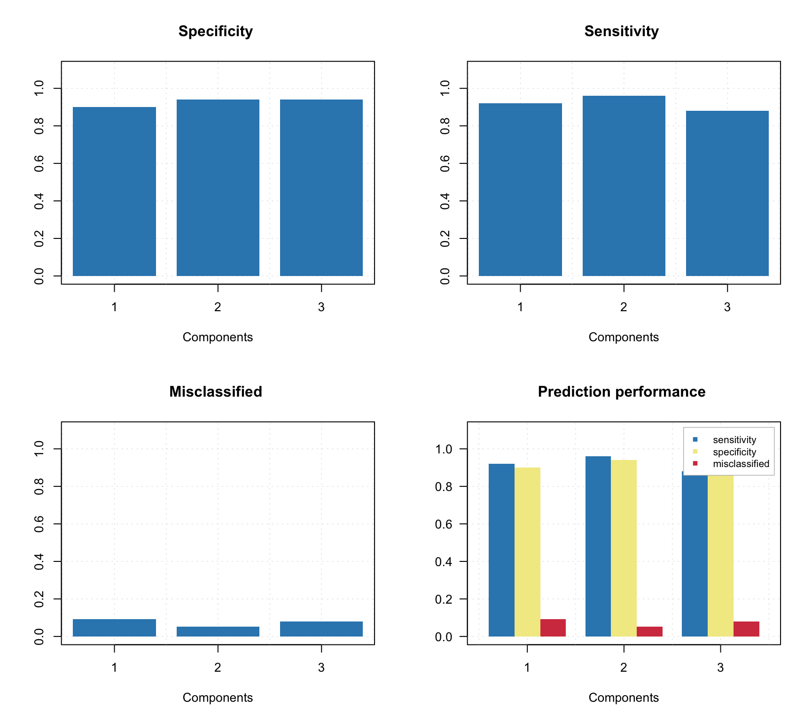
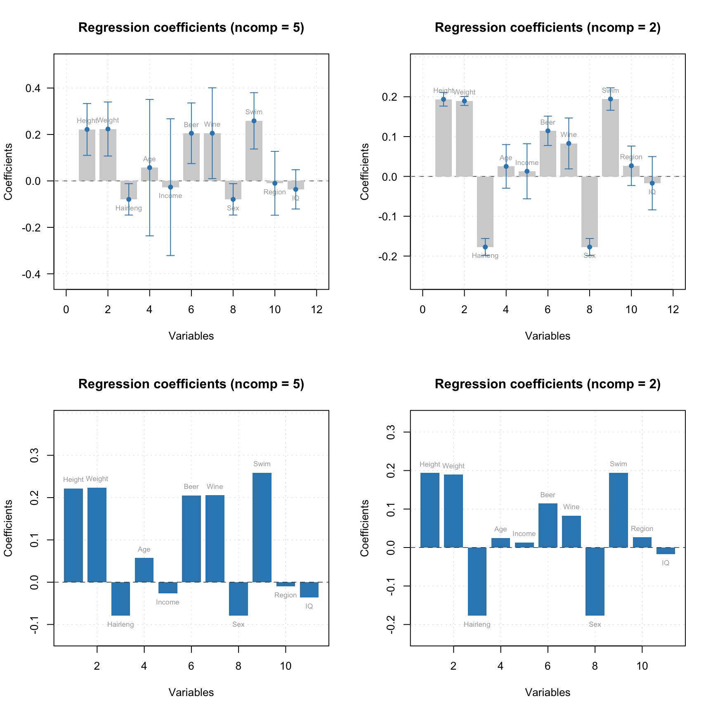
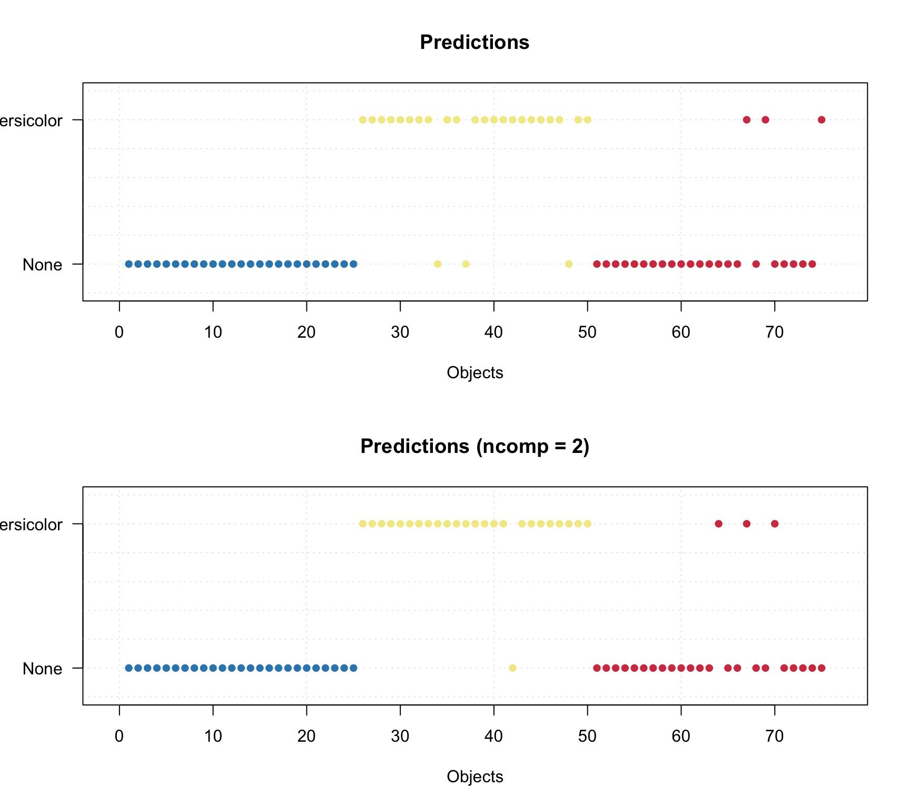

Calibration and validation
The model calibration is similar to PCA, but there are several additional arguments, which are important for classification. First of all it is a class name. Class name is a string, which can be used later e.g. for identifying class members for testing. The second important argument is a level of significance, alpha. This parameter is used for calculation of statistical limits and can be considered as probability for false negatives. The default value is 0.05.
In this chapter as well as for describing other classification methods we will use a famous Iris dataset, available in R. The dataset includes 150 measurements of three Iris species: Setosa, Virginica and Versicola. The measurements are length and width of petals and sepals in cm. Use ?iris for more details.
Let’s get the data and split it to calibration and test sets.
data(iris)
head(iris)## Sepal.Length Sepal.Width Petal.Length Petal.Width Species
## 1 5.1 3.5 1.4 0.2 setosa
## 2 4.9 3.0 1.4 0.2 setosa
## 3 4.7 3.2 1.3 0.2 setosa
## 4 4.6 3.1 1.5 0.2 setosa
## 5 5.0 3.6 1.4 0.2 setosa
## 6 5.4 3.9 1.7 0.4 setosa# generate indices for calibration set
idx = seq(1, nrow(iris), by = 2)
# split the values
X.c = iris[idx, 1:4]
c.c = iris[idx, 5, drop = F]
X.t = iris[-idx, 1:4]
c.t = iris[-idx, 5, drop = F]Now, because for calibration we need only objects belonging to a class, we will split the X.c into three matrices — one for each species. The data is ordered by the species, so it can be done relatively easy by taking every 25 rows.
X.set = X.c[1:25, ]
X.ver = X.c[26:50, ]
X.vir = X.c[51:75, ]Let’s start with creating a model for class Versicolor and exploring available statistics and plots. We will use full cross-validation to validate the results.
library(mdatools)
m = simca(X.ver, 'versicolor', ncomp = 3, cv = 1)
summary(m)##
## SIMCA model for class "versicolor" summary
##
## Info:
## Significance level (alpha): 0.05
## Selected number of components: 3
##
## Expvar Cumexpvar Sens (cal) Expvar (cv) Sens (cv)
## Comp 1 76.44 76.44 0.96 71.85 0.88
## Comp 2 13.93 90.37 0.92 13.91 0.84
## Comp 3 8.45 98.82 0.92 12.24 0.84Let’s look at plots and start with summary plot.
plot(m)
The plot is very similar to what we seen for PCA model, the only difference is that it shows modelling power instead of loadings. Modelling power is a measure of contribution of each variable to the model and varies from 0 to 1. Usually variables with modelling power below 0.1 are considered as irrelevant.
Let’s give a closer look at the residuals plot with different values for alpha (we will keep number of components equal to three in all cases).
m1 = simca(X.ver, 'versicolor', ncomp = 3, cv = 1, alpha = 0.01)
m2 = simca(X.ver, 'versicolor', ncomp = 3, cv = 1, alpha = 0.05)
m3 = simca(X.ver, 'versicolor', ncomp = 3, cv = 1, alpha = 0.10)
m4 = simca(X.ver, 'versicolor', ncomp = 3, cv = 1, alpha = 0.15)
par(mfrow = c(2, 2))
plotResiduals(m1)
plotResiduals(m2)
plotResiduals(m3)
plotResiduals(m4)
As you can see, using alpha = 0.01 reduced number of false negatives to zero, as the acceptance limits became larger, while alpha = 0.15 gives a lot of incorrectly rejected class members. It must be noted, that decreasing alpha will also lead to a larger number of false positives, which we can not see in this case.
Predictions and validation with a test set
When model is ready one can test it using a new test set with know classes. In this case we will use objects from all three species and be able to see how good the model performs on strangers (and calculate the specificity). In order to do that we will provide both the matrix with predictors, X.t, and a vector with names of the classes for corresponding objects/rows (c.t). The values with known classes in this case can be:
- a vector with text values (names)
- a factor using the names as labels
- a vector with logical values (
TRUEfor class members andFALSEfor strangers)
In our case we have a factor. Instead of creating a new model and providing the values as test set we will make predictions instead.
res = predict(m, X.t, c.t)
summary(res)##
## Summary for SIMCA one-class classification result
##
## Class name: versicolor
## Number of selected components: 3
##
## Expvar Cumexpvar TP FP TN FN Spec Sens
## Comp 1 64.27 64.27 23 5 45 2 0.90 0.92
## Comp 2 1.67 65.95 24 3 47 1 0.94 0.96
## Comp 3 32.45 98.40 22 3 47 3 0.94 0.88In this case we see a more detailed statistics with true/false positives and negatives, specificity and sensitivity. The performance statistics can be also shown as plots.
par(mfrow = c(2, 2))
plotSpecificity(res)
plotSensitivity(res)
plotMisclassified(res)
plotPerformance(res)
The classification results can be shown both graphically and numerically. Here is a prediction plot for the results.
par(mfrow = c(2, 1))
plotPredictions(res)
plotPredictions(res, ncomp = 2)
So we can see that for the model with three components we have no false positives (specificity = 1) and one false negative (sensitivity = 24/25 = 0.96). You can also show the predictions as a matrix with -1 and +1 using method showPredictions() or get the array with predicted class values directly as it is shown in the example below (for first 10 rows, different number of components and the first classification variable).
show(res$c.pred[31:40, 1:3, 1])## Comp 1 Comp 2 Comp 3
## 62 1 1 1
## 64 1 1 1
## 66 1 1 1
## 68 1 1 -1
## 70 1 1 1
## 72 1 1 1
## 74 1 1 -1
## 76 1 1 1
## 78 1 1 1
## 80 1 1 1